কীভাবে আপনার কম্পিউটারের ডেটা নিরাপদে মুছবেন #
লাইসেন্স ও অ্যাট্রিবিউশন নোট
এই লেখাটি Electronic Frontier Foundation (EFF)-এর Surveillance Self-Defense প্রকল্পের "How to: Delete Your Computer's Data Securely" নিবন্ধের একটি বাংলা অনুবাদ। মূল নিবন্ধ: https://ssd.eff.org/module/how-to-delete-your-computers-data-securely
মূল লেখাটি Creative Commons Attribution 4.0 International (CC BY 4.0) লাইসেন্সের অধীনে প্রকাশিত। এই অনুবাদও একই লাইসেন্সের অধীনে প্রকাশিত।
অনুবাদ করা হয়েছে মূল ইংরেজি লেখা থেকে; এতে পরিবর্তন (ভাষান্তর) করা হয়েছে। এই অনুবাদ EFF কর্তৃক অনুমোদিত বা সমর্থিত নয়।
অনুবাদক: সামিন ইয়াসার · অনুবাদের তারিখ: ০১ অক্টোবর, ২০২৬
নিরাপদে ডেটা মুছে ফেলা (secure deletion) কেবল ঘূর্ণায়মান ডিস্ক ড্রাইভের (spinning disk drive) ক্ষেত্রেই নির্ভরযোগ্যভাবে কাজ করে; সলিড-স্টেট ড্রাইভ (SSD)-এর ক্ষেত্রে করে না। আধুনিক কম্পিউটার, ইউএসবি থাম্ব ড্রাইভ ও এসডি কার্ডে সাধারণত SSD-ই স্টোরেজ ড্রাইভ হিসেবে ব্যবহৃত হয়। আপনি যদি ২০১৫ সাল বা তার কাছাকাছি সময়ের পরে কম্পিউটার কিনে থাকেন, তবে সেটিতে সম্ভবত SSD-ই আছে। SSD, ইউএসবি ফ্ল্যাশ ড্রাইভ ও এসডি কার্ডে নিরাপদে ডেটা মুছে ফেলা খুবই কঠিন! আপনি যদি SSD বা ইউএসবি ফ্ল্যাশ ড্রাইভ ব্যবহার করেন, তবে ড্রাইভটি এনক্রিপ্ট করাই তার ডেটা সুরক্ষিত রাখার সর্বোত্তম উপায়। SSD-তে নিরাপদে ডেটা মুছে ফেলা কেন কঠিন, তা জানতে আগ্রহী হলে পড়তে থাকুন। আপনার যদি ঘূর্ণায়মান ডিস্ক ড্রাইভ থাকে, তবে নিচের নির্দেশনায় চলে যান।
সলিড-স্টেট ডিস্ক (SSD), ইউএসবি ফ্ল্যাশ ড্রাইভ ও এসডি কার্ডে নিরাপদে ডেটা মোছা #
আপাতদৃষ্টিতে যা মনে হয় তার বিপরীতে, আপনি যখন কম্পিউটারের ট্র্যাশ ফোল্ডারে কোনো ফাইল সরিয়ে ট্র্যাশ খালি করেন, তখনও ফাইলটি পুরোপুরি মুছে যায় না। কম্পিউটার সাধারণত ফাইল "ডিলিট" করে না। আপনি যখন কোনো ফাইল ট্র্যাশে সরান, তখন কম্পিউটার ফাইলটিকে অদৃশ্য করে দেয় এবং সেটি যে জায়গা দখল করে ছিল, ভবিষ্যতে কোনো এক সময় সেখানে অন্য কিছু লেখার সুযোগ করে দেয়। ফাইলটি ওভাররাইট (overwrite) হতে কয়েক সপ্তাহ, কয়েক মাস, এমনকি কয়েক বছরও লেগে যেতে পারে। তা না হওয়া পর্যন্ত সেই "মুছে ফেলা" ফাইলটি আপনার ডিস্কেই থেকে যায়; শুধু স্বাভাবিক কাজকর্মে সেটি দেখা যায় না। সামান্য চেষ্টা এবং উপযুক্ত সরঞ্জাম (যেমন "আনডিলিট" সফটওয়্যার বা ফরেনসিক পদ্ধতি) ব্যবহার করে কেউ সেই "মুছে ফেলা" ফাইল উদ্ধার করতে পারে।
তাহলে কোনো ফাইল চিরতরে মুছে ফেলার সর্বোত্তম উপায় কী? নিশ্চিত করুন যে ফাইলটি তাৎক্ষণিকভাবে ওভাররাইট হয়েছে। এতে সেখানে আগে যা লেখা ছিল, তা উদ্ধার করা কঠিন হয়ে যায়। আপনার অপারেটিং সিস্টেমে সম্ভবত এমন সফটওয়্যার আগে থেকেই আছে, যা আপনার ডিস্কের সব "ফাঁকা" জায়গা অর্থহীন তথ্য (gibberish) দিয়ে ওভাররাইট করে মুছে ফেলা ডেটার গোপনীয়তা রক্ষা করতে পারে।
দুর্ভাগ্যবশত, SSD, ইউএসবি ফ্ল্যাশ ড্রাইভ ও এসডি কার্ড যেভাবে কাজ করে, তার কারণে আলাদা আলাদা ফাইল এবং কিছু অপারেটিং সিস্টেম ফাইলের যেসব অংশ ফাঁকা জায়গায় রেখে দেয়, সেগুলো নিরাপদে মুছে ফেলা কঠিন, এমনকি অসম্ভবও বটে। তাই আপনার সেরা উপায় হলো এনক্রিপশন ব্যবহার করা। এতে ফাইলটি ডিস্কে থেকে গেলেও, যে-ই সেটি হাতে পাক না কেন এবং আপনাকে ডিক্রিপ্ট করতে বাধ্য করতে না পারলে, তার কাছে ফাইলটি অর্থহীন তথ্যের মতো দেখাবে।
SSD ও ইউএসবি ফ্ল্যাশ ড্রাইভ ওয়্যার লেভেলিং (wear leveling) নামের একটি কৌশল ব্যবহার করে। প্রতিটি ডিস্কের স্থান ব্লকে ভাগ করা থাকে, অনেকটা বইয়ের পাতার মতো। কোনো ফাইল ডিস্কে লেখা হলে সেটি নির্দিষ্ট একটি ব্লক বা কয়েকটি ব্লকে (পাতায়) বরাদ্দ হয়। ফাইলটি ওভাররাইট করতে চাইলে ডিস্ককে কেবল সেই ব্লকগুলো ওভাররাইট করতে বলতে হয়। কিন্তু SSD ও ইউএসবি ড্রাইভে একই ব্লক বারবার মুছে নতুন করে লিখলে সেটি ক্ষয়ে যেতে পারে। প্রতিটি ব্লক সীমিত সংখ্যক বারই মোছা ও পুনরায় লেখা যায়; তারপর সেটি আর কাজ করে না (যেমন কাগজে পেনসিল দিয়ে বারবার লিখে মুছতে থাকলে এক সময় কাগজ ছিঁড়ে অকেজো হয়ে যেতে পারে)।
এটি ঠেকাতে SSD ও ইউএসবি ড্রাইভ চেষ্টা করে যাতে প্রতিটি ব্লক মোটামুটি সমান সংখ্যক বার মোছা ও পুনরায় লেখা হয়, ফলে ড্রাইভটি যথাসম্ভব দীর্ঘ সময় টিকে থাকে (এ কারণেই এর নাম ওয়্যার লেভেলিং)। এর পার্শ্বপ্রতিক্রিয়া হিসেবে, ফাইলটি মূলত যে ব্লকে ছিল সেটি মুছে আবার লেখার বদলে ড্রাইভ অনেক সময় সেই ব্লকটি যেমন আছে তেমনই রেখে দেয়, সেটিকে অবৈধ (invalid) হিসেবে চিহ্নিত করে এবং পরিবর্তিত ফাইলটি অন্য একটি ব্লকে লেখে। এটি অনেকটা বইয়ের একটি পাতা অপরিবর্তিত রেখে পরিবর্তিত ফাইলটি অন্য একটি পাতায় লেখা, তারপর বইয়ের সূচিপত্র হালনাগাদ করে নতুন পাতার দিকে নির্দেশ করার মতো। এসব কিছু ঘটে ডিস্কের ইলেকট্রনিক্সের নিম্ন স্তরে, তাই অপারেটিং সিস্টেম এমনকি টেরও পায় না যে এটি ঘটেছে।
এর মানে, আপনি কোনো ফাইল ওভাররাইট করার চেষ্টা করলেও ড্রাইভ সত্যিই সেটি ওভাররাইট করবে, এর কোনো নিশ্চয়তা নেই। এ কারণেই SSD-তে নিরাপদে ডেটা মোছা অনেক বেশি কঠিন। তবে ফাইলটি যে অনন্তকাল ধরে হাতের নাগালে থাকবে, তা-ও নয়। SSD-তে কোনো ফাইল মুছলে একটি আধুনিক অপারেটিং সিস্টেম একটি "TRIM" কমান্ড পাঠায় এবং পরে "গার্বেজ কালেকশন (garbage collection)" নামের একটি প্রক্রিয়ায় ডেটাটি সরিয়ে ফেলে। কোনো এক সময় আপনি সেই ব্লকের ওপর নতুন ডেটা লিখবেন এবং সেখানে সংরক্ষিত ডেটা হারিয়ে যাবে। এই প্রক্রিয়া অপারেটিং সিস্টেম ও SSD ভেদে ভিন্ন হয়। ওয়্যার লেভেলিং ঠেকাতে ফাইল বিভিন্ন ব্লকে ছড়িয়ে থাকে বলে ঠিক কখন ফাইলটি পুরোপুরি মুছে গেল, তা জানা কঠিন।
পুরোনো হার্ডওয়্যার ফেলে দেওয়ার সময় নিরাপদে ডেটা মোছা #
আপনি যদি কোনো হার্ডওয়্যার ফেলে দিতে, বিক্রি করতে বা দান করতে চান, তাহলে নিশ্চিত করা দরকার যে কেউ সেটি থেকে আপনার ডেটা উদ্ধার করতে পারবে না। ঘূর্ণায়মান ডিস্ক হার্ড ড্রাইভসহ কোনো কম্পিউটার বিক্রি বা রিসাইকেল করার আগে প্রথমে এর স্টোরেজ মাধ্যম অর্থহীন তথ্য দিয়ে ওভাররাইট করে নিন। এখনই ফেলে না দিলেও, মেশিনটি কোণে ফেলে রাখার আগে হার্ড ড্রাইভ মুছে ফেলা বেশি নিরাপদ। ডারিকস বুট অ্যান্ড নিউক (Darik's Boot and Nuke) এই কাজের জন্যই তৈরি একটি টুল। এটি কীভাবে ব্যবহার করতে হয়, তা নিয়ে ইন্টারনেটে নানা ধরনের টিউটোরিয়াল আছে (এখানে একটি আছে)।
কিছু ফুল-ডিস্ক এনক্রিপশন সফটওয়্যারে মাস্টার কি (master key) নষ্ট করে ফেলার সুবিধা থাকে, যার ফলে হার্ড ড্রাইভের এনক্রিপ্ট করা বিষয়বস্তু চিরতরে দুর্বোধ্য হয়ে যায়। কি (key) অত্যন্ত ক্ষুদ্র একটি ডেটা এবং সেটি প্রায় সঙ্গে সঙ্গেই নষ্ট করে ফেলা যায়, তাই ডারিকস বুট অ্যান্ড নিউকের মতো সফটওয়্যার দিয়ে ওভাররাইট করার চেয়ে এটি অনেক দ্রুততর বিকল্প; বড় ড্রাইভের ক্ষেত্রে ওভাররাইট করতে অনেক সময় লেগে যেতে পারে। তবে এই বিকল্প তখনই সম্ভব, যখন হার্ড ড্রাইভটি সব সময় এনক্রিপ্ট করা ছিল। আপনি যদি আগে থেকে ফুল-ডিস্ক এনক্রিপশন ব্যবহার না করে থাকেন, তবে ড্রাইভটি ফেলে দেওয়ার আগে পুরো ড্রাইভ ওভাররাইট করতে হবে।
আপনি যদি SSD-যুক্ত কোনো পুরোনো কম্পিউটার বিক্রি বা দান করেন, তাহলে কম্পিউটারটিকে ফ্যাক্টরি ডিফল্টে রিসেট করার আগে ড্রাইভটি এনক্রিপ্ট করাই আপনার সেরা উপায় (নির্দেশনা Windows ও Mac-এর জন্য)। কিছু SSD প্রস্তুতকারক এমন "সিকিউর ওয়াইপিং" (secure wiping) টুলও দিতে পারে, যা আপনি কম্পিউটারের BIOS থেকে চালাতে পারেন, এবং এটি একটি কার্যকর বাড়তি ধাপ হতে পারে। BIOS (পূর্ণরূপ Basic Input Output System) হলো মাদারবোর্ডের একটি মেমোরি চিপে সংরক্ষিত সফটওয়্যার, যা বুট করার মতো নির্দেশ পরিচালনা করে। সাধারণত বুট হওয়ার সময় কীবোর্ডের একটি শর্টকাট চেপে BIOS চালু করা যায়।
সিডি বা ডিভিডি-রম ফেলে দেওয়া #
সিডি বা ডিভিডি-রমের ক্ষেত্রে কাগজের মতো একই কাজ করুন: শ্রেড (shred) করুন। এগুলো টুকরো টুকরো করে ফেলার মতো সস্তা শ্রেডার পাওয়া যায়। ডিস্কে সংবেদনশীল কিছু নেই বলে সম্পূর্ণ নিশ্চিত না হলে কখনোই সিডি বা ডিভিডি-রম এমনি ময়লার ঝুড়িতে ফেলবেন না। আপনার কাছে শ্রেডার না থাকলে ফেলে দেওয়ার আগে ডিস্কটি ছোট ছোট টুকরো করে ভেঙে নিন। অত্যাধুনিক ফরেনসিক টুল হয়তো তখনও এতে থাকা ডেটা উদ্ধার করতে পারে, তবু আস্ত একটি ডিস্ক ফেলে দেওয়ার চেয়ে এটি অনেক ভালো।
ফাইল মুছতে BleachBit ব্যবহারের নিয়ম #
ঘূর্ণায়মান ডিস্ক ড্রাইভযুক্ত Windows ও Linux কম্পিউটারে ফাইল মুছতে আমরা BleachBit ব্যবহারের পরামর্শ দিই। এটি একটি ওপেন-সোর্স নিরাপদ-মোছার টুল। BleachBit দ্রুত ও সহজে আলাদা আলাদা ফাইল নিরাপদে মুছতে পারে, কিংবা নিয়মিত বিরতিতে নিরাপদে মোছার নীতি (policy) বাস্তবায়ন করতে পারে। নিজের মতো করে ফাইল মোছার নির্দেশ লেখাও সম্ভব। তবে এটি অলৌকিক কিছু করতে পারে না, এবং ওপরে যেমন বলা হয়েছে, আপনি ডেটা ঘূর্ণায়মান ডিস্ক ড্রাইভে সংরক্ষণ করলেই কেবল এটি কার্যকর।
macOS-এ নিরাপদে ডেটা মোছার সুবিধা দীর্ঘদিন ধরে আর পাওয়া যায় না। এর বদলে আমরা আপনার স্টোরেজ ড্রাইভ এনক্রিপ্ট করার পরামর্শ দিই।
Windows-এ BleachBit ইনস্টল করা #
BleachBit-এর ডাউনলোড পেজ থেকে ইনস্টলার ডাউনলোড করে Windows-এ BleachBit পেতে পারেন। "Windows" অপশনে ক্লিক করুন, তারপর "BleachBit installer .exe" লিংকে ক্লিক করুন।
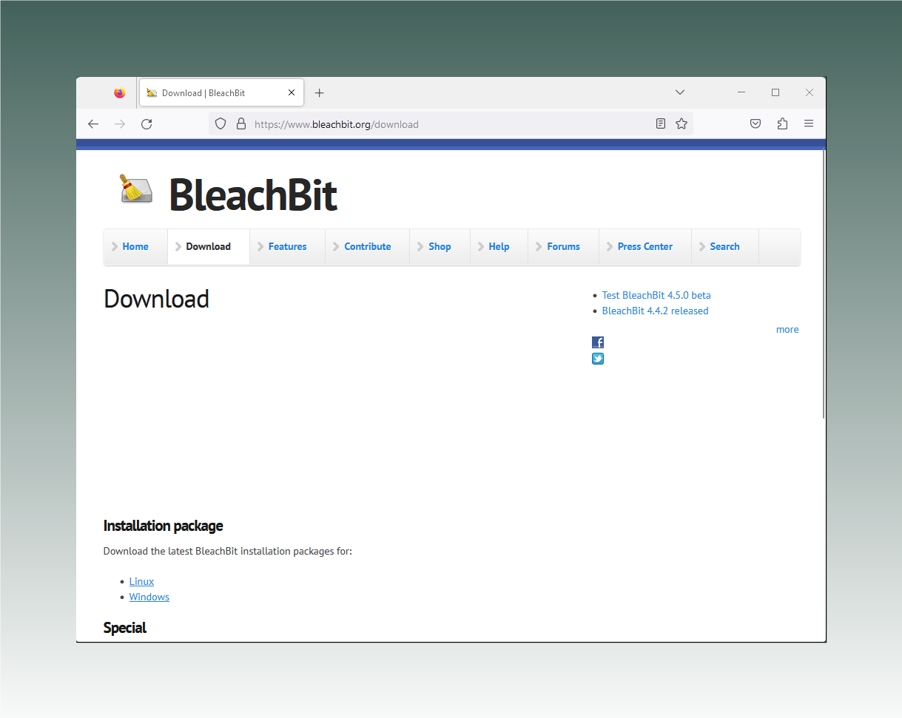
ডাউনলোড শেষে ইনস্টলার ফাইলটিতে (সাধারণত আপনার কম্পিউটারের "Downloads" ফোল্ডারে থাকে) ডাবল-ক্লিক করে ইনস্টলেশন প্রোগ্রাম চালান। একটি উইন্ডো খুলে ইনস্টলেশনের ভাষা বেছে নিতে বলবে। পছন্দের ভাষা নির্বাচন করে "OK" বোতামে ক্লিক করুন।
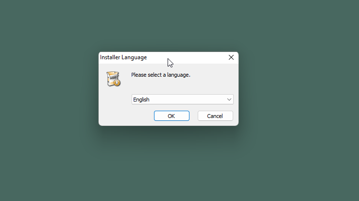
এরপর একটি স্বাগত পর্দা (welcome screen) দেখতে পাবেন। চালিয়ে যেতে "Next"-এ ক্লিক করুন।
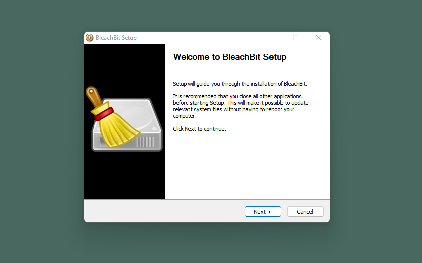
পরের উইন্ডোতে GNU General Public License দেখানো হবে। "I accept the terms of the License Agreement" অপশনটি নির্বাচন করে "Next"-এ ক্লিক করুন।
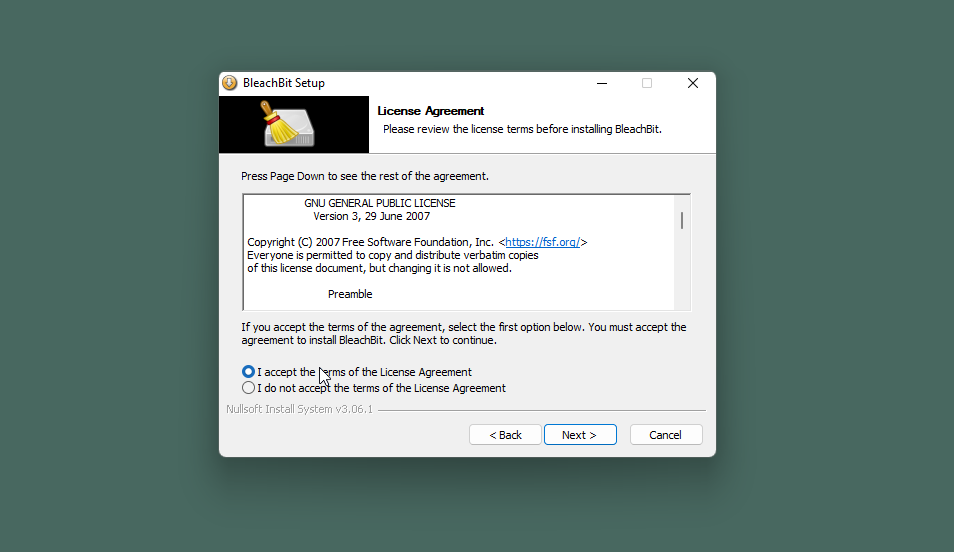
এরপর আপনাকে জিজ্ঞাসা করা হবে, আপনি BleachBit সব ব্যবহারকারীর জন্য ইনস্টল করতে চান, নাকি শুধু নিজের জন্য। আপনি কয়েকজনের সঙ্গে এই কম্পিউটার ভাগ করে ব্যবহার না করলে যেকোনো একটি অপশন বেছে নিলেই চলবে।
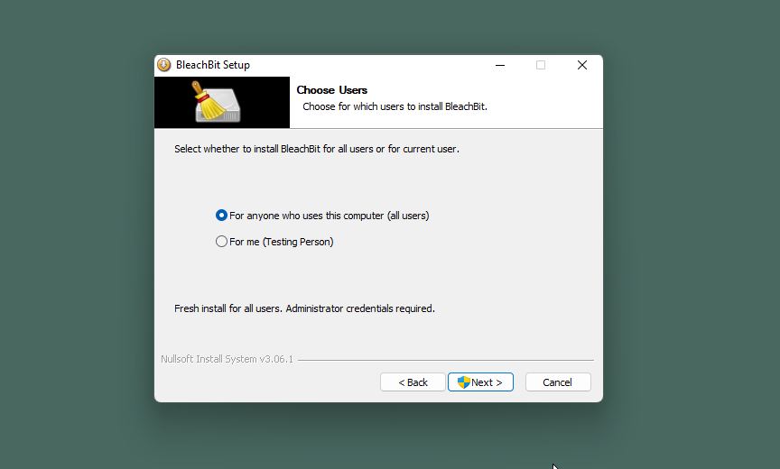
এখন BleachBit জানতে চাইবে, কোথায় ইনস্টল করতে চান তা নিশ্চিত করুন। বেশিরভাগ মানুষ এটি ডিফল্ট ফোল্ডারেই রেখে দিতে পারেন। ইচ্ছে হলে ফোল্ডার পরিবর্তন করতে "Browse"-এ ক্লিক করুন, তারপর শেষ হলে "Next"-এ ক্লিক করুন।
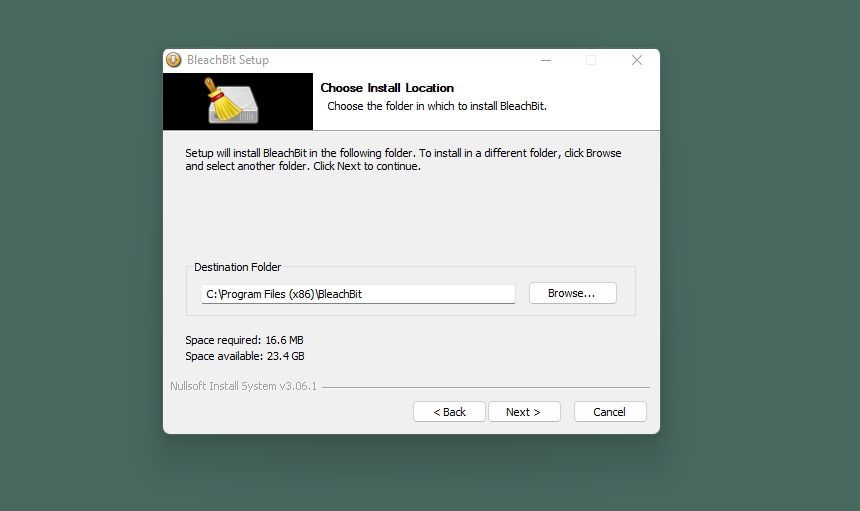
পরের উইন্ডোতে BleachBit কয়েকটি কাস্টমাইজেশন অপশন দেখায়। আপনি অপশনগুলো যেমন আছে তেমনই রাখতে পারেন, তবে আমরা "Desktop" অপশন থেকে টিক চিহ্ন সরিয়ে দেওয়ার পরামর্শ দিই, যাতে BleachBit আপনার ডেস্কটপে দেখা না যায়। এরপর "Install" বোতামে ক্লিক করুন।
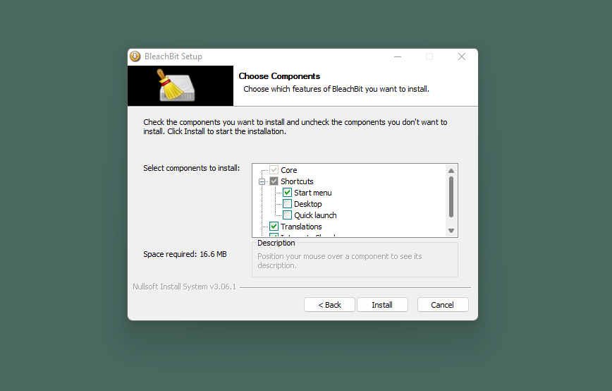
সংক্ষিপ্ত ইনস্টলেশন প্রক্রিয়ার পর BleachBit ইনস্টলার একটি উইন্ডো দেখিয়ে জানাবে যে ইনস্টলেশন সম্পন্ন হয়েছে। "Next" বোতামে ক্লিক করুন।
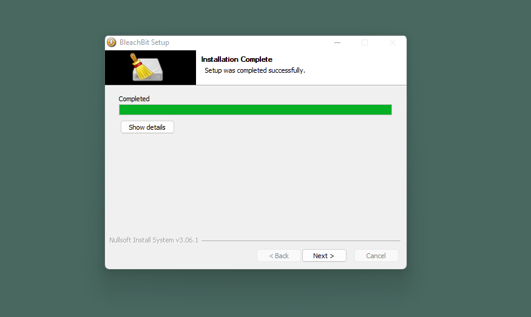
ইনস্টলারের শেষ উইন্ডোতে জানতে চাওয়া হবে, আপনি BleachBit চালু করতে চান কি না। এখনই খুলতে না চাইলে "Run BleachBit" অপশন থেকে টিক চিহ্ন সরিয়ে দিন, আর প্রোগ্রামটি খুলতে চাইলে অপশনটি যেমন আছে তেমনই রেখে দিন, তারপর "Finish" বোতামে ক্লিক করুন। আপনি Windows-এর কোন সংস্করণ ও কী সেটিংস ব্যবহার করছেন তার ওপর নির্ভর করে, BleachBit প্রথমবার খোলার সময় একটি পপ-আপ দেখতে পারেন, যেখানে জিজ্ঞাসা করা হবে আপনি অ্যাপটিকে আপনার ডিভাইসে পরিবর্তন করার অনুমতি দিতে চান কি না। BleachBit ফাইল মুছে ফেলার একটি প্রোগ্রাম, তাই নিজের কাজ করার জন্য এই অনুমতি প্রয়োজন; অতএব "Yes" বোতামে ক্লিক করুন।
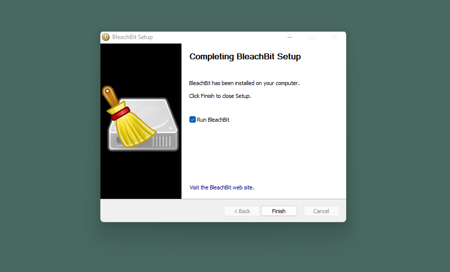
Linux-এ BleachBit ইনস্টল করা #
BleachBit ইনস্টল করার সবচেয়ে সহজ উপায় হলো আপনার পছন্দের ডিস্ট্রো (distro)-র সফটওয়্যার অ্যাপ্লিকেশন ব্যবহার করা (টার্মিনালের মাধ্যমে ইনস্টল করতে চাইলে নির্দেশনার জন্য BleachBit-এর ডকুমেন্টেশনে যান)। এখানে আমরা Ubuntu Software অ্যাপ ব্যবহার করব। অ্যাপটি খুলুন এবং ওপরের ডান কোণে ম্যাগনিফাইং গ্লাস আইকনে ক্লিক করুন, তারপর "BleachBit" টাইপ করে Enter কী চাপুন। আপনি দুটি অপশন দেখতে পাবেন: "BleachBit" এবং "BleachBit (as root)"। "BleachBit" অপশনে ক্লিক করুন, তারপর "Install"-এ ক্লিক করুন।
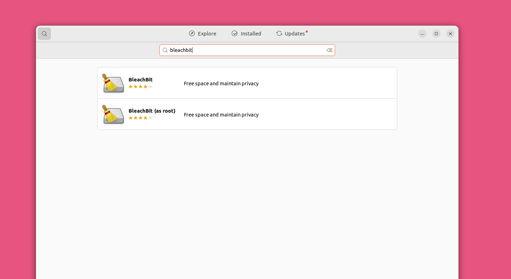
এরপর Ubuntu আপনার পাসওয়ার্ড চাইবে। সেটি টাইপ করে ইনস্টলেশন প্রক্রিয়া শুরু করতে "Authenticate"-এ ক্লিক করুন।
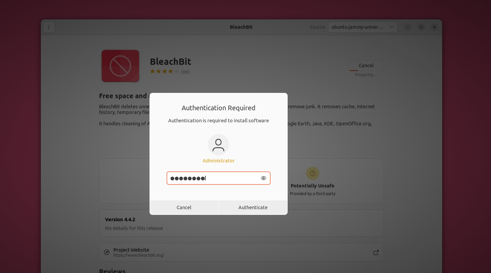
এখন আপনি নিচের বাঁ দিকের অ্যাপ্লিকেশন মেনু থেকে BleachBit খুলতে পারবেন। অ্যাপটি নিজে খুঁজে নিতে পারেন, অথবা সার্চ করেও পেতে পারেন।
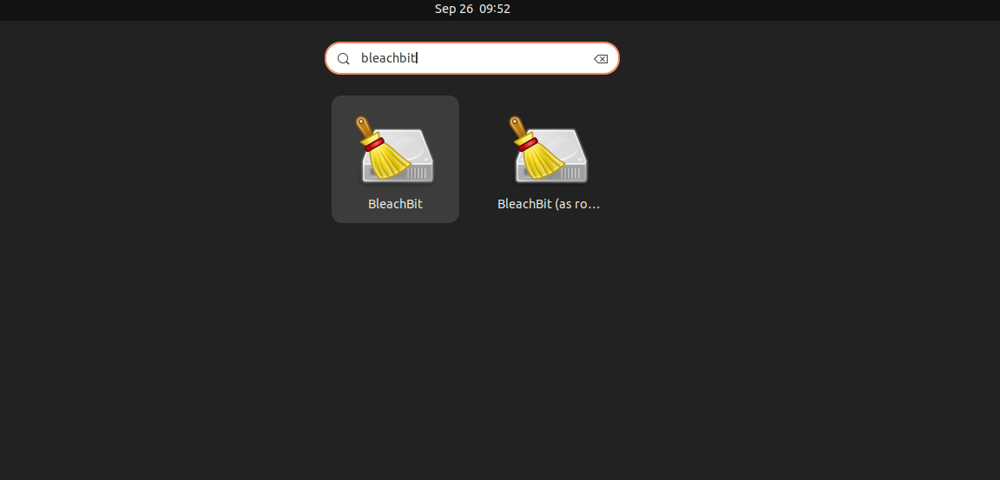
খোলার পর Linux-এর BleachBit দেখতে Windows সংস্করণের মতোই। মূল পার্থক্য হলো, Windows-এর মতো বাঁ দিকের BleachBit আইকনে ক্লিক করে মেনু না খুলে আপনাকে ডান দিকের তিন দাগের "হ্যামবার্গার" (hamburger) মেনুতে ক্লিক করতে হবে।
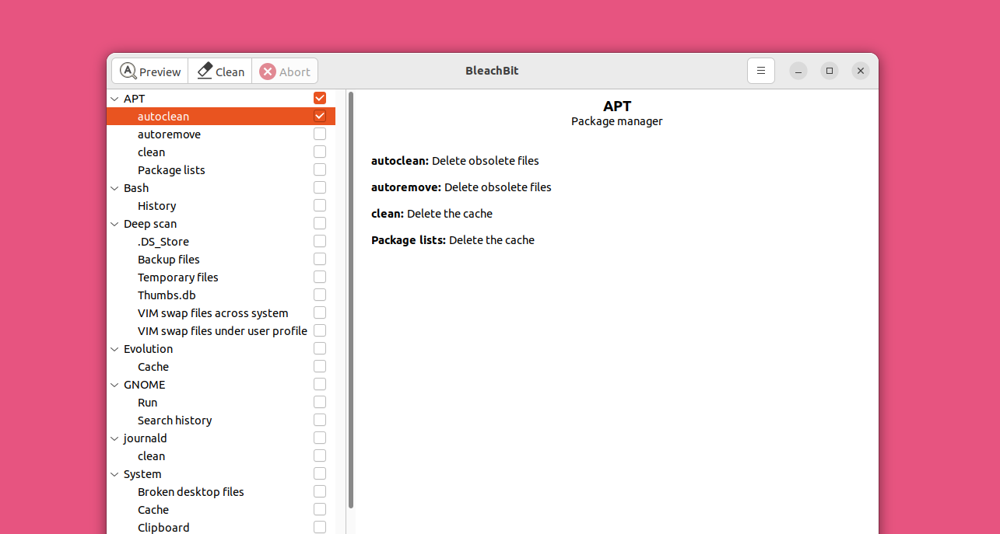
ইনস্টল হয়ে গেলে BleachBit Windows ও Linux-এ একইভাবে কাজ করে, তাই আমরা দুটোর নির্দেশনা এখানে একত্র করেছি। এই স্ক্রিনশটগুলো সবই Windows 11 থেকে নেওয়া, তবে যে কয়েকটি বিরল ক্ষেত্রে পার্থক্য আছে, সেখানে আমরা Linux-এর নির্দেশনাও দিয়েছি।
নিরাপদে কোনো ফোল্ডার বা ফাইল মুছবেন যেভাবে #
BleachBit আইকনে (Linux-এ তিন দাগের হ্যামবার্গার মেনুতে) ক্লিক করুন এবং আপনি কোন কাজটি করতে চান তার ওপর নির্ভর করে "Shred Files" বা "Shred Folders" নির্বাচন করুন।

একটি উইন্ডো খুলে আপনি যে ফোল্ডার বা ফাইল শ্রেড করতে চান তা বেছে নিতে বলবে।
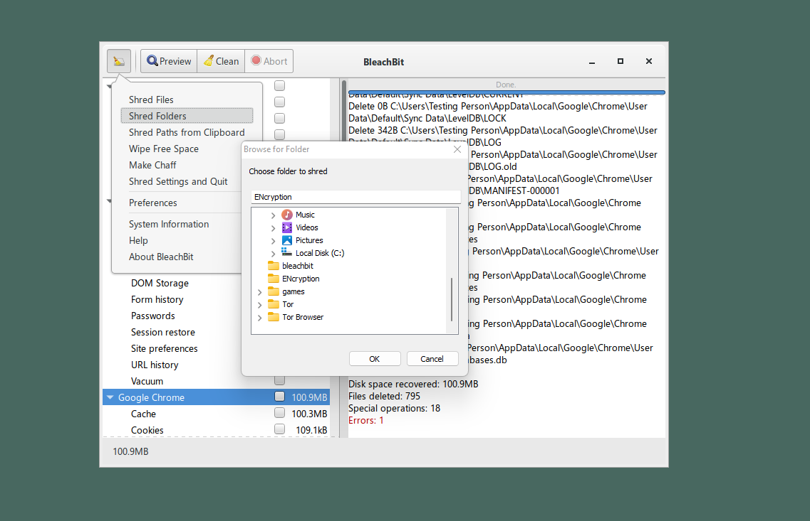
BleachBit আপনার নির্বাচিত ফাইলগুলো স্থায়ীভাবে মুছে ফেলতে চান কি না তা নিশ্চিত করতে বলবে। "Delete" বোতামে ক্লিক করুন।
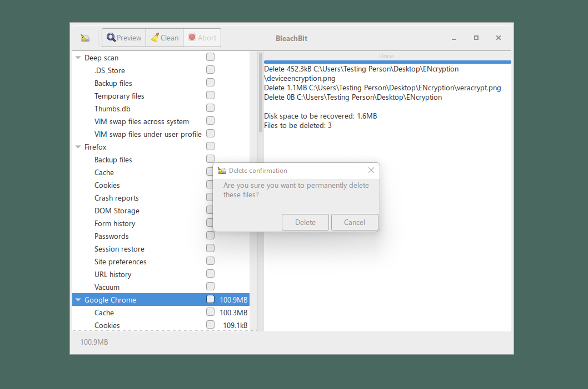
BleachBit আপনার মুছে ফেলা ফাইলগুলো দেখায়। আপনি কোনো ফোল্ডার মুছলে BleachBit ফোল্ডারের প্রতিটি ফাইল নিরাপদে মুছে ফেলে, তারপর ফোল্ডারটিও নিরাপদে মুছে ফেলে।
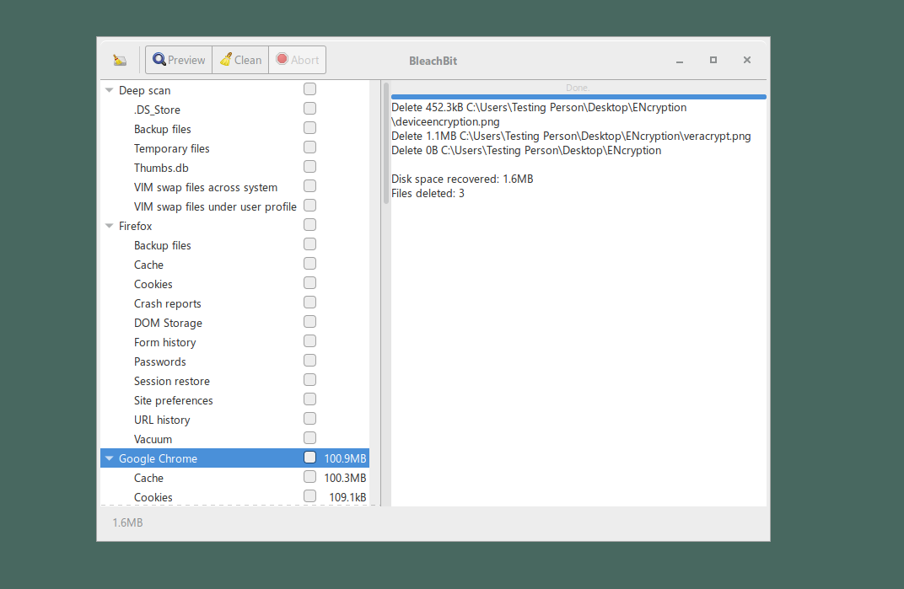
প্রিসেট ব্যবহার করা #
BleachBit নির্দিষ্ট অ্যাপ্লিকেশন বা অপারেটিং সিস্টেমের কার্যকারিতার চিহ্ন মুছে ফেলতে পারে। উদাহরণস্বরূপ, এটি Google Chrome ব্রাউজারের সঙ্গে সম্পর্কিত সবকিছু মুছে ফেলতে পারে, যার মধ্যে আছে অস্থায়ী ফাইল, ব্রাউজিং ইতিহাস ও পাসওয়ার্ড। মনে রাখবেন, Chrome-এর মতো কিছু ক্ষেত্রে এটি প্রোগ্রামটি ছাড়া বাকি সবকিছু মুছে ফেলে, তাই আপনি যদি নিশ্চিতভাবে সেটাই করতে চান, কেবল তখনই এই সুবিধা ব্যবহার করুন। কোনো প্রিসেট ব্যবহারের আগে সেটির বিবরণ মনোযোগ দিয়ে পড়ুন এবং BleachBit ঠিক কী কী মুছবে তা আরও ভালোভাবে দেখতে "Preview" বোতামে ক্লিক করুন। System সেটিংসের কিছু অংশের মতো কোনো কিছু কী বা সেটি কী কাজ করে, সে বিষয়ে নিশ্চিত না হলে সেই ফাইলগুলো শ্রেড করবেন না।
এসব মাথায় রেখে, এটি কীভাবে কাজ করে তার উদাহরণ হিসেবে Google Chrome ব্যবহার করা যাক। BleachBit-এর প্রধান পর্দা থেকে স্ক্রল করে Google Chrome পর্যন্ত যান এবং সবকিছু নির্বাচন করতে এর পাশের চেকবক্সে ক্লিক করুন। পর্দার ডান দিকে আরও বিস্তারিত তথ্য দেখানো হয়। কোনো অংশ মুছতে না চাইলে সেই বক্সের টিক চিহ্ন সরিয়ে দিন।
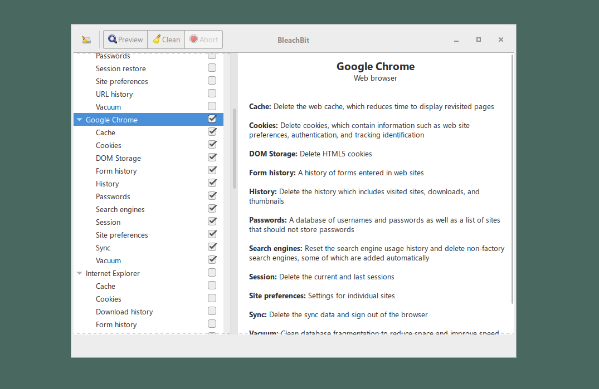
এই ফাইলগুলো মুছতে আপনি স্বচ্ছন্দ বোধ করলে "Clean"-এ ক্লিক করুন। এরপর সবকিছু মুছে ফেলতে চান কি না তা নিশ্চিত করতে বলা হবে। প্রস্তুত হলে "Delete"-এ ক্লিক করুন।
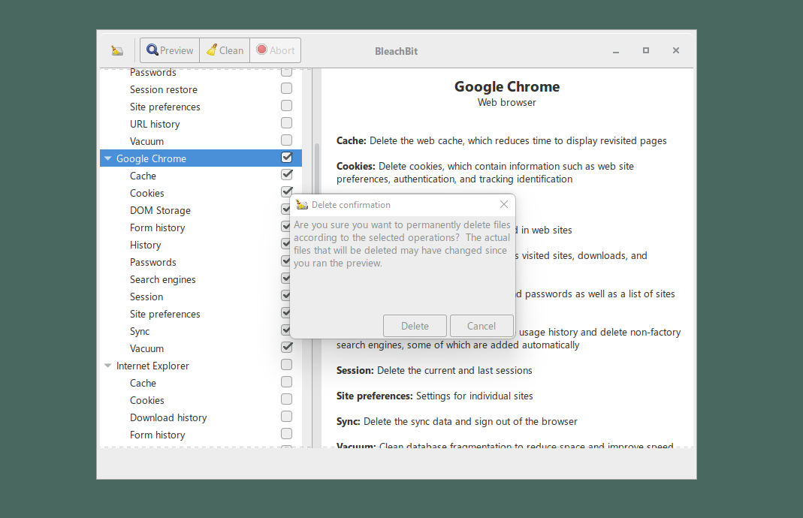
এখন BleachBit কিছু ফাইল পরিষ্কার করবে এবং অগ্রগতি দেখাবে।
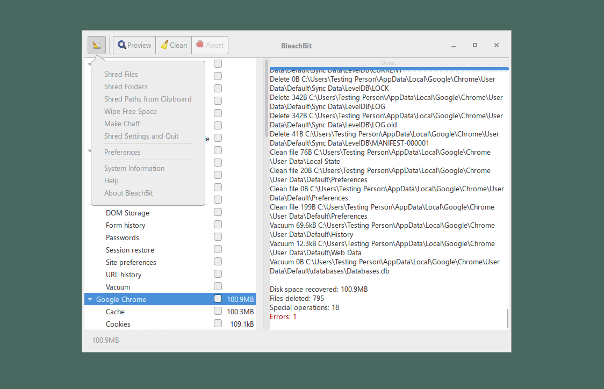
BleachBit-এ আরও কিছু উল্লেখযোগ্য সুবিধা আছে, যার মধ্যে "Wipe free space" অন্যতম। এটি হার্ড ড্রাইভের ফাঁকা অংশগুলো এলোমেলো ডেটা দিয়ে ওভাররাইট করে, যা মুছে ফেলা ফাইলের অবশিষ্ট ডেটার অংশ সরাতে সাহায্য করে। ফাঁকা স্থান মোছা (wiping free space) মানে আপাতদৃষ্টিতে ফাঁকা অংশগুলো এলোমেলো ডেটা দিয়ে ওভাররাইট করা। আপনার ড্রাইভে কতটা অতিরিক্ত ধারণক্ষমতা আছে তার ওপর নির্ভর করে ফাঁকা স্থান মুছতে অনেক সময় লাগতে পারে। বিভিন্ন সুবিধা সম্পর্কে আরও নির্দিষ্ট বিবরণের জন্য BleachBit-এর ডকুমেন্টেশন দেখুন।
নিরাপদে ডেটা মোছার টুলের সীমাবদ্ধতা সম্পর্কে একটি সতর্কবার্তা #
ওপরের পরামর্শ কেবল আপনি যে কম্পিউটার ব্যবহার করছেন, তার ডিস্কের ফাইল মোছে। ওপরের কোনো টুলই অন্য ডিস্ক বা ইউএসবি ড্রাইভে, ইমেইল সার্ভারে, ক্লাউডে সংরক্ষিত ব্যাকআপ, কিংবা আপনার পরিচিতদের কাছে পাঠানো কপি মুছবে না। কোনো ফাইল নিরাপদে মুছতে হলে সেই ফাইলের প্রতিটি কপি, সবখানে থেকে মুছতে হবে। উপরন্তু, কোনো ফাইল একবার ক্লাউডে (যেমন Dropbox বা অন্য কোনো ফাইল-শেয়ারিং সেবায়) চলে গেলে, সেটি চিরতরে মুছে যাবে এমন নিশ্চয়তা দেওয়ার সাধারণত কোনো উপায় থাকে না।
দুর্ভাগ্যবশত, নিরাপদে ডেটা মোছার টুলের আরেকটি সীমাবদ্ধতাও আছে। আপনি ওপরের পরামর্শ অনুসরণ করে একটি ফাইলের সব কপি মুছে ফেললেও, মুছে ফেলা ফাইলের কিছু চিহ্ন আপনার কম্পিউটারে থেকে যেতে পারে। এর কারণ ফাইলগুলো ঠিকভাবে মোছা হয়নি, তা নয়; বরং অপারেটিং সিস্টেমের কোনো অংশ বা অন্য কোনো প্রোগ্রাম সেগুলোর রেকর্ড রেখে দেয়।
উদাহরণস্বরূপ, আপনি ফাইলটি মুছে ফেললেও Microsoft Office "Recent Documents" মেনুতে ফাইলের নামের একটি উল্লেখ ধরে রাখতে পারে (Office কখনো কখনো ফাইলের বিষয়বস্তুসহ অস্থায়ী ফাইলও রেখে দিতে পারে)। অথবা কোনো ব্যবহারকারীর শেল হিস্ট্রি (shell history) ফাইলে এমন কমান্ড থাকতে পারে, যেগুলোতে ফাইলের নাম আছে, যদিও ফাইলটি নিরাপদে মুছে ফেলা হয়েছে। বাস্তবে এভাবে আচরণ করে এমন কয়েক ডজন প্রোগ্রাম থাকতে পারে।
এই সমস্যার কীভাবে মোকাবিলা করা যায়, তা বলা কঠিন। নিরাপদে ধরে নেওয়া যায় যে কোনো ফাইল নিরাপদে মুছে ফেলা হলেও সেটির নাম সম্ভবত আরও কিছুকাল আপনার কম্পিউটারে থেকে যাবে। নামটি যে মুছে গেছে, তা ১০০% নিশ্চিত হওয়ার একমাত্র উপায় হলো পুরো ডিস্ক ওভাররাইট করা। ডিস্কে অনুসন্ধান করলে আপনি জানতে পারবেন তথ্যটি প্লেইনটেক্সটে (plaintext) আছে কি না, কিন্তু কোনো প্রোগ্রাম সেটির উল্লেখ সংকুচিত করে বা অন্য কোনোভাবে কোডে রূপান্তর করে রেখেছে কি না, তা জানা যাবে না। আরও সতর্ক থাকুন, যাতে অনুসন্ধান নিজেই কোনো রেকর্ড রেখে না যায়! ফাইলের বিষয়বস্তু থেকে যাওয়ার সম্ভাবনা কম, কিন্তু অসম্ভব নয়।
পুরো ডিস্ক ওভাররাইট করা এবং একটি নতুন অপারেটিং সিস্টেম ইনস্টল করাই কোনো ফাইলের রেকর্ড মুছে গেছে বলে ১০০% নিশ্চিত হওয়ার একমাত্র উপায়।